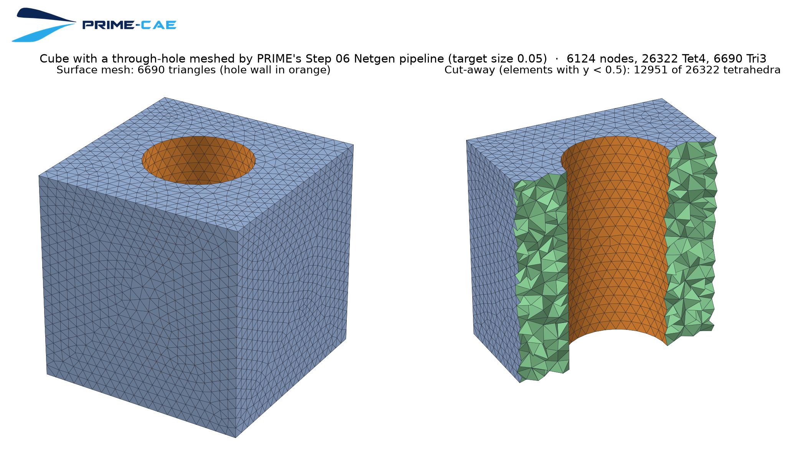
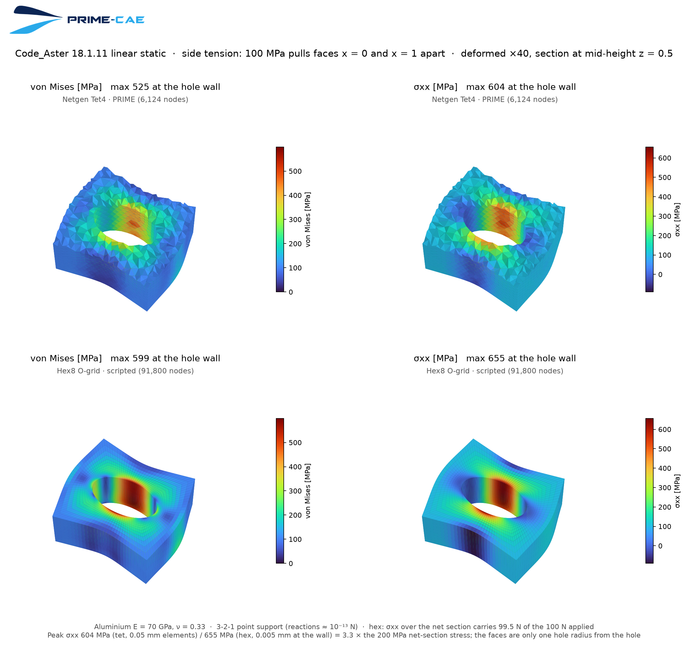
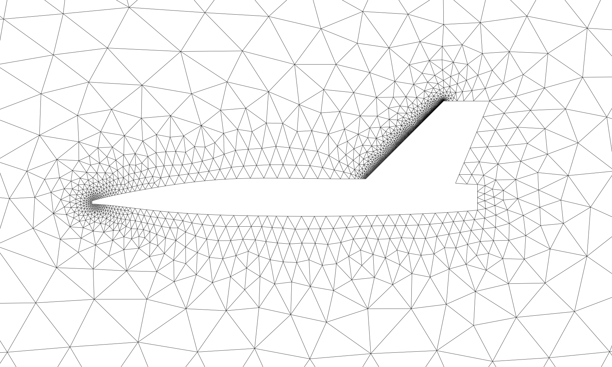
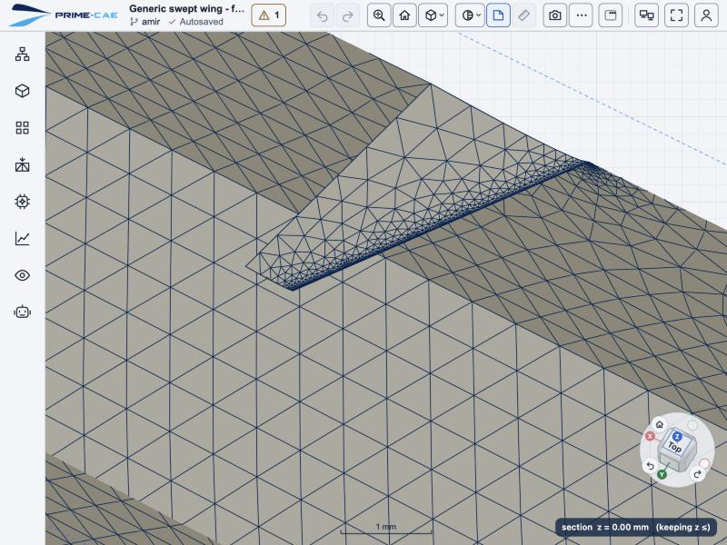
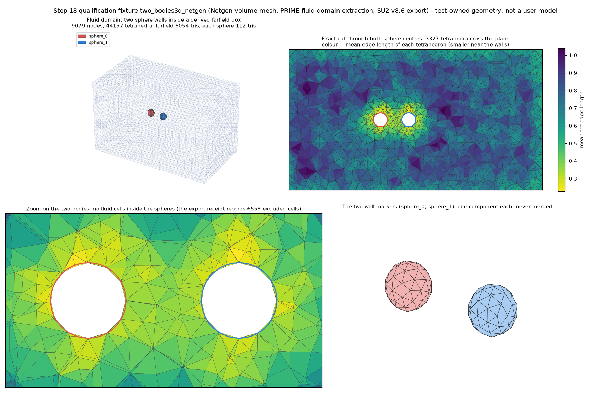

Stress concentration around a hole
Cube under side tension
Inspect stress concentration around the hole as the cube is pulled from its sides. The video presents the model’s stress field.
Cube with a hole under side tension · PRIME-CAE demonstration.
Spectral element Method for wave propagation in isotropic and composite materials
Interactive dispersion
Open dispersion viewer in a full windowGuided waves in aluminium
A 150 kHz guided-wave demonstration in an isotropic aluminium plate. Watch scattering around openings and reflections from the plate boundaries.
Isotropic aluminium plate · 150 kHz. Guided-wave propagation, scattering and reflections. These videos use reconstructed display pixels, as annotated in the original media.
Guided waves in a composite
A 150 kHz guided-wave demonstration in the synthetic L3 composite laminate, showing propagation, scattering and reflections.
L3 composite laminate · 150 kHz. Guided-wave propagation, scattering and reflections. These videos use reconstructed display pixels, as annotated in the original media.
PRIME-CAE is an AI-native computer-aided engineering platform from AXIOPHYS Inc. It brings design, simulation and optimization into a shared environment.
One engineering intelligence layer
The platform brings together geometry, physics, data, AI, validation and optimization. This connected approach is intended to help engineers explore design possibilities, understand complex behavior and make better-informed engineering decisions.
Four engineering missions
- Computational resources — share and govern computing capacity across engineering teams.
- Engineering workflows — reduce repetitive setup, execution and documentation work under engineer oversight.
- Computational time and cost — pursue faster, more economical verified simulations and Physics AI data generation.
- Design — explore broader design spaces and evaluate better performing structures and systems.
Cube with a hole


CFD mesh demonstrations
Mesh views from the PRIME-CAE CFD demonstrations, including a swept wing and a two-body fluid domain.



Learn more
This overview draws on the platform information published on our website. For current capabilities, collaboration or early access, contact our team.